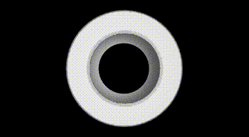
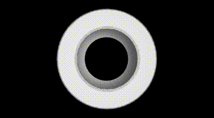

CEA-IMSOLD: a Dataset for Multi-Scale Object Localization in Industry
- Boris Meden¹
- Emanuel Pablo Vega¹
- Fabrice Mayran de Chamisso¹
- Steve Bourgeois¹ ¹Université Paris-Saclay, CEA List, F-91120, Palaiseau, France
Abstract
We introduce the CEA Industrial Multi-Scale Object Localization Dataset (CEA-IMSOLD), a new BOP format dataset for 6-DoF object localization, crucial for robotics. This dataset aims to evaluate the current localization methods with respect to a new difficulty: large variations in observation distance and, consequently, large variations in image appearance. Compared to the other publicly available datasets, our dataset provides both images with objects small and completely visible in the image, and images where objects are observed close enough so they appear larger than the field of view of the cam- era. We also propose to consider the observation distance in the evaluation process and introduce new metrics to do so. Finally, our dataset contains a large variety of industrial objects, from small and simple objects such as bolts to sizable and complex ones such as large car parts.
Dataset overview

Our dataset covers the following aspectcs, until now unconsidered:
- Camera to object distance variation: as illustrated above, our dataset includes large observation distance variations while this variation is limited in BOP challenge datasets. This makes this suitable for use cases such as: inspection, augmented reality, mobile robotics, etc.
- Depth sensor quality variety: our dataset includes depth images provided by both high-end and low-cost sensors, and covers both industrial and consumer applications.
- Object complexity variation: our dataset includes both simple (e.g. bottle cap), and complex objects (e.g. car engine), covering use cases such as pick-and-place and quality inspection.
- High accuracy ground-truth: the annotation process based on robotic arm and high-end depth sensors allows to reach high accuracy ground-truth.
- A new metric taking into account distance to objects in performance evaluation.
IMSOLD statistics


Objects and 3D models
The dataset is composed of 25 objects with different characteristics in terms of surface (reflecting vs. lambertian), symmetries (with vs. without full rotational symmetry), complexity (primitive shapes vs. complex objects), flatness (flat vs. voluminous), details (with vs. without very fine details on their surface), compactness (long vs. compact), and size (diameters from 23 mm to 1278 mm).

 


Each scene was acquired with a calibrated setup consisting of an industrial grade structured light RGB-D sensor (Zivid 2, with spatial resolution of 0.39mm at 700mm), a consumer grade active stereo RGB-D sensor (Realsense D415) and an industrial RGB camera (FLIR camera with resolution 2048x1536), all the three rigidly mounted on a 6 DOF robotic manipulator (UR10e from Universal Robots, with a position repeatability of 0.05 mm). Each scene was acquired from multiple viewpoints and with large observation distance variations.
Ground-truth annotations
CEA-IMSOLD proposes a variety of challenges based on object geometry, material, appearance and scale variation. Below we show some examples of ground thruth annotations for some of the objects in the dataset
Industrial grade RGB-D sensor


Citation
Contact
For more information contact boris.meden[at]cea.fr